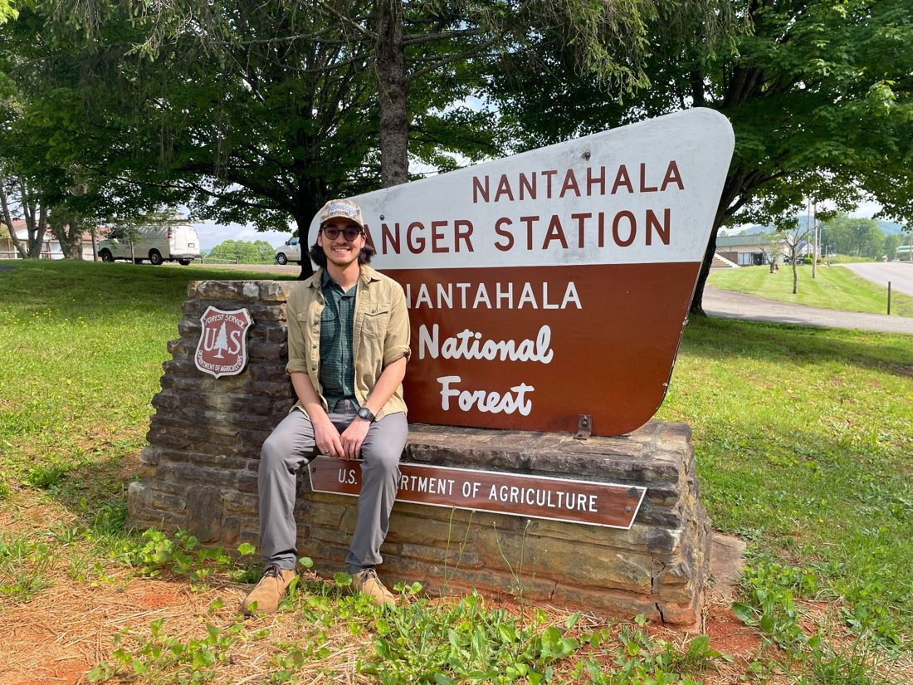
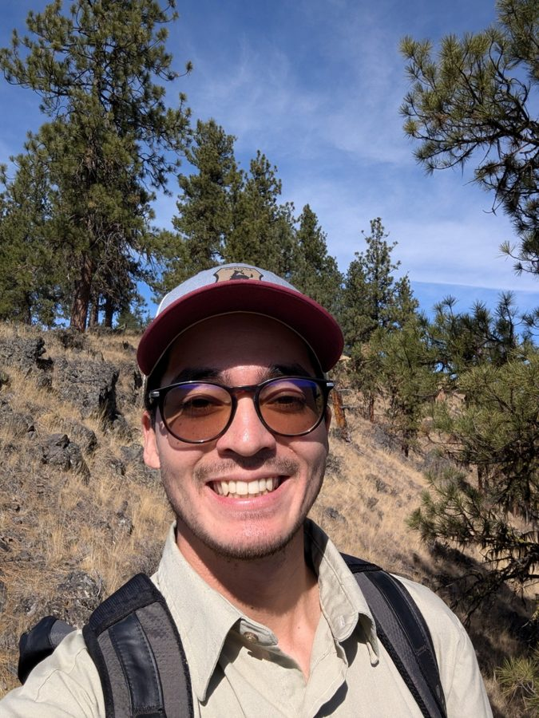
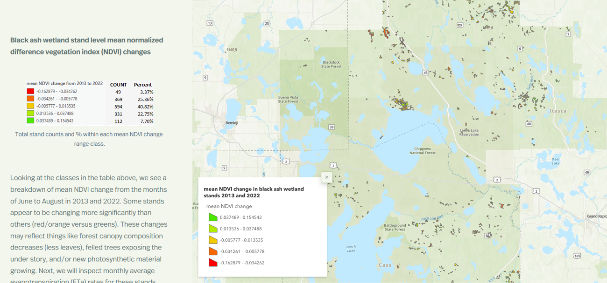
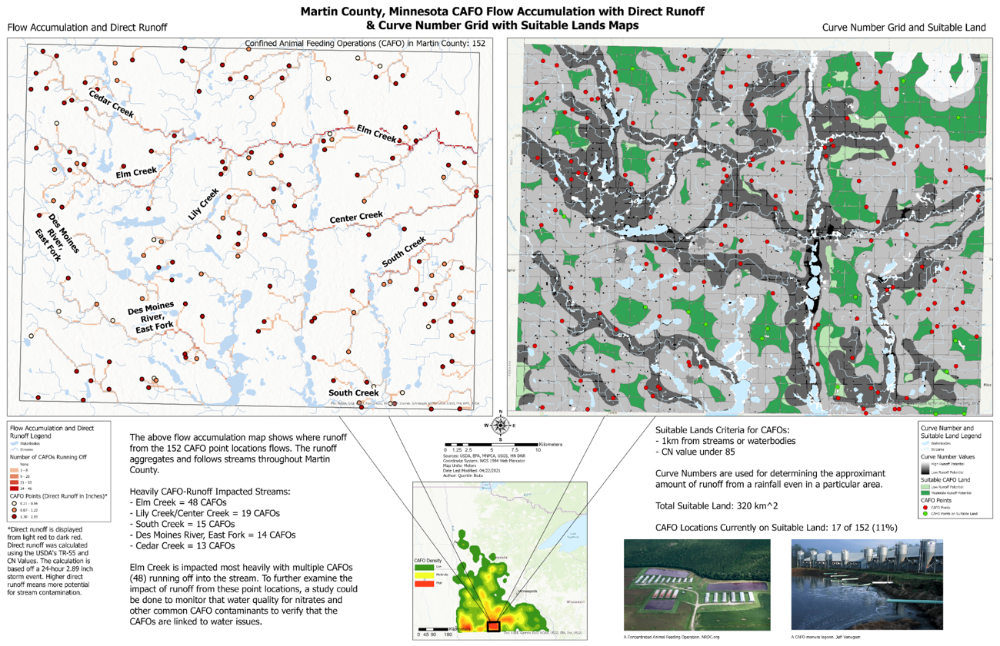
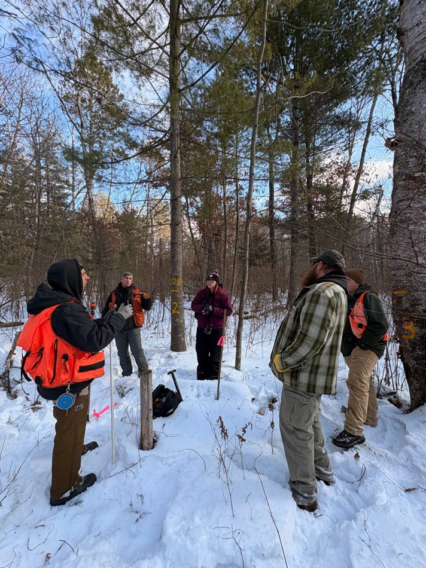
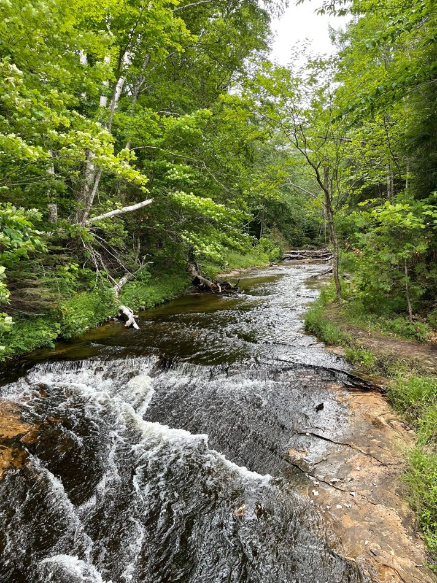
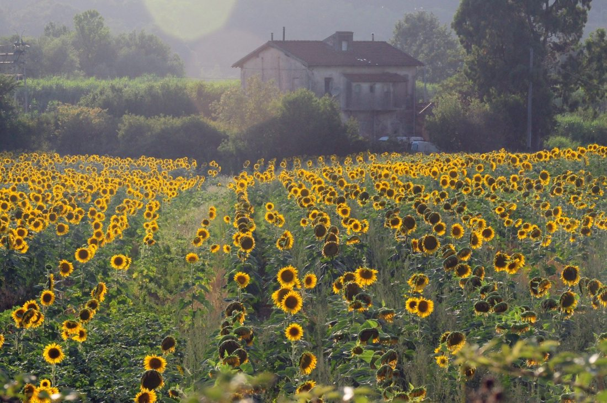
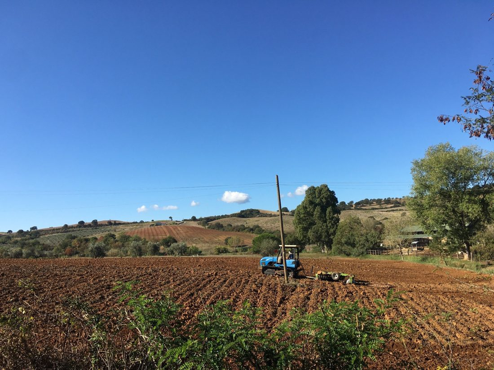
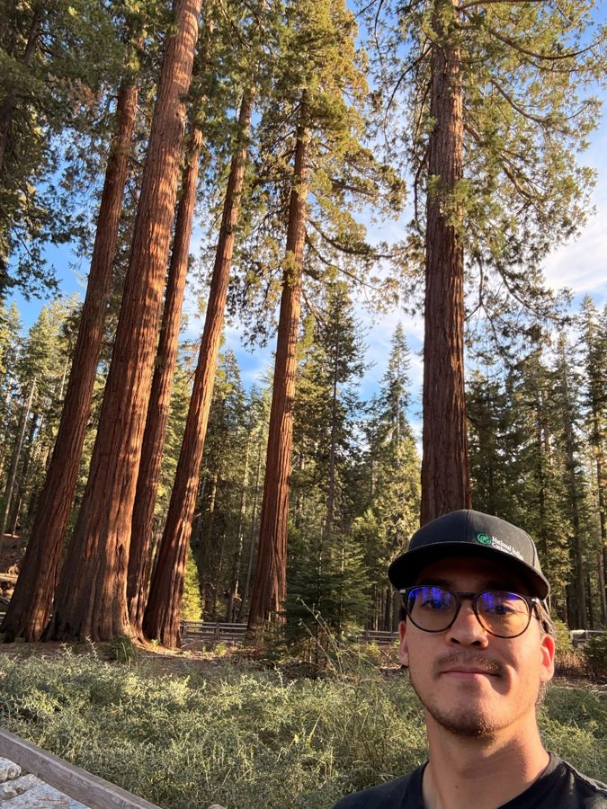

NASA Airborne Sensor Facility
At the NASA Airborne Sensor Facility, where airborne remote sensing systems connect field questions, geospatial analysis, and applied environmental monitoring.
Research and applied learning
My research and applied learning connect field ecology, forest management, agricultural economics, remote sensing, GIS, and public-facing stewardship communication.
At the NASA Airborne Sensor Facility, where airborne remote sensing systems connect field questions, geospatial analysis, and applied environmental monitoring.

On the Nantahala National Forest, where I completed a Student Trainee position in silviculture and connected field forestry with applied research and spatial analysis.
Publications and research outputs
These outputs show how my work connects technical methods with real conservation questions across forests, wetlands, agriculture, remote sensing, and public communication.
First author • Journal of Forestry • 2025
Peer-reviewed research using field data, MaxEnt, and Random Forest modeling to identify stand-scale oak regeneration potential in the Nantahala National Forest.

Master’s thesis and ArcGIS StoryMap • University of Minnesota • 2024
Graduate research translating oak regeneration modeling and field forestry questions into a public-facing spatial decision-support story.

Remote sensing and StoryMap output
Applied remote sensing and spatial analysis to black ash stand monitoring on the Chippewa National Forest and Leech Lake Band of Ojibwe lands.
Field technology, spatial data, and applied monitoring
Field experience using remote sensing technology to connect landscape conditions, measurement tools, and applied natural resource questions.

Applied GIS and water quality analysis
Analyzed CAFO locations, waterways, and runoff exposure in Martin County, Minnesota, connecting agricultural land use, water quality, and spatial analysis.

Field methods, stand conditions, and stewardship planning
Field inventory experience that connects forest conditions, monitoring design, technical teams, and applied stewardship decisions.

Watersheds, conservation planning, and land use
Conservation work that recognizes water quality as part of a broader landscape system shaped by forests, agriculture, infrastructure, and community decisions.

Sustainable Agriculture in Italy • HECUA
Undergraduate training in agricultural and applied economics, strengthened through a semester focused on sustainable agriculture, working landscapes, food systems, and rural communities in Italy.

Applied economics, agriculture, and land stewardship
Research and coursework that shaped how I understand conservation through land use, producer decisions, rural economies, public programs, and place-based stewardship.

Contributing author • University of British Columbia project
Contributed to a framework focused on Indigenous-led forest stewardship, governance, and community-centered approaches to forest-based carbon offsetting.
Applied perspective
I focus on applied work that helps people make better stewardship decisions across ecosystems, land uses, communities, and public programs.